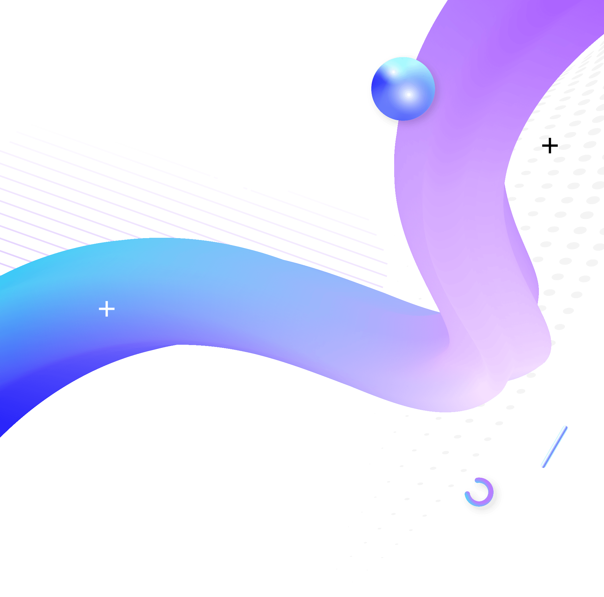

Материалы для студентов MTC
Эта страница содержит материалы уроков для студентов MTC на тему: «Технология как слуга, а не господин».
Цель этих уроков — помочь христианам научиться мудро использовать технологии, хранить своё сердце и использовать современные инструменты для распространения Евангелия.
День 1 — Урок 1 Технология как слуга, а не господин Тема урока: Битва за внимание Технологии — это часть моей ежедневной жизни. Но как христиане, и особенно как миссионеры, мы должны задать себе очень важный вопрос: Служат ли технологии нам… или незаметно начинают управлять нами? Сегодня и завтра мы будем говорить о теме, которая, как я считаю, крайне важна для каждого христианина нашего поколения: «Технология как слуга, а не господин». Сами по себе технологии не являются злом. На самом деле они могут стать невероятным инструментом для Царства Божьего. Но если мы не будем осторожны, те же инструменты, которые должны помогать нам, могут постепенно начать контролировать наше внимание, наш разум и даже наше сердце. Сегодня мы начнем с очень важной темы: битва за наше внимание.» 1. Чтение Писания Основной стих: Притчи 4:23 «Больше всего хранимого храни сердце твоё, потому что из него источники жизни.» Краткое объяснение: «Библия говорит нам, что самое важное, что мы должны хранить — это не наш телефон, не нашу репутацию и не наш успех. Она говорит: храни своё сердце. Почему? Потому что из сердца исходит всё в нашей жизни — наши решения, наш характер, наша духовная жизнь.» 2. Притча Притча: Два колодца «Однажды путник пришёл в сухую пустынную деревню. Ему очень нужна была вода. Он начал копать колодец. Но через несколько минут он остановился и перешёл на другое место. Потом на ещё одно. И ещё на одно. К концу дня он выкопал десять неглубоких ям, но ни одна из них не достигла воды. Позже пришёл другой путник. Он выбрал одно место и начал копать глубоко. Это была тяжёлая работа. Солнце палило. Земля была твёрдой. Но спустя несколько часов вода наконец появилась. У первого путника было много неглубоких ям. У второго путника был один глубокий колодец. И только у него была вода.» Мораль: «Рассеянная жизнь выкапывает много неглубоких ям. Сосредоточенная жизнь находит живую воду.» 3. Учение Объяснение: «Наше поколение живёт в мире, где внимание постоянно находится под атакой. Каждое уведомление. Каждая лента социальных сетей. Каждая рекомендация видео. Компании тратят миллиарды долларов, изучая, как захватывать и удерживать человеческое внимание. Почему? Потому что внимание очень ценно. Но Писание напоминает нам, что внимание — это не просто ценность. Это духовная территория. То, чему мы отдаём своё внимание, постепенно формирует: • наши мысли • наши желания • то, кем мы становимся.» 4. Библейская история Марфа и Мария (Луки 10:38–42) Объяснение: «Марфа была занята многими делами. Иисус не сказал, что эти дела были злом. Но Он сказал очень важные слова: “Марфа, Марфа… ты заботишься и суетишься о многом, а одно только нужно.” Мария выбрала сидеть и слушать. Она выбрала присутствие вместо отвлечения.» Применение: «Сегодня мы тоже окружены множеством вещей, которые борются за наше внимание. Но Иисус по-прежнему говорит: одно только нужно.» 5. Практический принцип Утреннее правило «Первый голос, который вы слышите утром, не должен быть голосом вашего телефона. Это должен быть голос Бога.» Практика: • Писание прежде экрана • молитва прежде уведомлений 6. Ободряющее завершение «Вы готовитесь служить Богу в поколении, полном отвлекающих факторов. Но хорошая новость заключается в том, что вам не нужно убегать от технологий. Вам просто нужно научиться управлять ими, а не позволять им управлять вами. Миссионер, который научится хранить своё внимание, сможет ясно слышать голос Бога даже в самом шумном мире.»
День 1 — Урок 2 Технология как слуга, а не господин Тема урока: Охранять врата разума «Библия учит нас, что мы должны охранять врата нашего разума и сердца, потому что то, что входит в наш разум, в конечном итоге формирует наш характер, наши решения и нашу духовную жизнь. Технологии способны приносить огромные возможности — знания, связь между людьми, доступ к информации. Но если мы не будем осторожны, они также могут приносить искушение, отвлечение и духовную слабость. Поэтому сегодня мы зададим важный вопрос: Как христиане могут охранять врата своего разума в цифровом мире?» 1. Чтение Писания Основной стих: Псалом 100:3 «Не положу перед глазами моими вещи непотребной.» Объяснение: «Этот стих показывает, что хранить сердце часто начинается с того, что мы выбираем смотреть. То, что мы ставим перед своими глазами, со временем начинает формировать наши мысли. А наши мысли в конечном итоге формируют то, кем мы становимся.» Дополнительный стих: Филиппийцам 4:8 «Что только истинно, что честно, что справедливо, что чисто… о том помышляйте.» 2. Притча Притча: Открытые городские ворота «Много лет назад существовал город, окружённый крепкими стенами. Эти стены защищали город от врагов. Но у города была одна слабость. Его ворота всегда оставались открытыми. Путники приходили и уходили свободно. Торговцы входили в город. Незнакомцы проходили внутрь без всяких вопросов. Сначала всё казалось спокойным. Но постепенно враги начали незаметно проникать в город. И когда жители наконец поняли, что произошло, враг уже находился внутри города. Стены были крепкими… Но ворота никогда не охранялись.» Мораль: «Даже сильная жизнь может разрушиться, если врата разума остаются без охраны.» 3. Библейская история Давид и Вирсавия (2 Царств 11) Объяснение: «Давид был человеком по сердцу Божьему. Он был царём, воином и служителем Бога. Но однажды вечером Давид вышел на крышу своего дома. Он увидел то, на что ему не следовало смотреть. Вместо того чтобы отвернуться, он позволил своему вниманию остановиться на этом. Один момент превратился в решение. Решение превратилось в действие. А действие превратилось в трагедию. История Давида напоминает нам, что даже сильные верующие должны внимательно хранить свои глаза и своё сердце.» Применение: «Сегодня технологии ставят перед нами тысячи изображений и идей каждый день. Поэтому хранить свой разум сегодня требует осознанной дисциплины.» 4. Практические меры защиты Защита №1 — Фильтр трёх вопросов Перед тем как смотреть что-то или проводить время онлайн, задайте себе три вопроса: 1. Поможет ли это укрепить мою веру? 2. Поможет ли это моей миссии? 3. Было бы мне комфортно смотреть это, если бы Иисус сидел рядом со мной? Если ответ отрицательный, возможно, этому не место в вашей жизни. Защита №2 — Границы использования устройств Примеры: • не листать телефон поздно ночью • не использовать устройства в уединённых закрытых местах • иметь духовную подотчётность перед надёжными верующими Это не правила страха. Это привычки мудрости. 5. Ободрение «Хранить своё сердце — это не значит жить в страхе. Это значит защищать что-то очень ценное. Ваше сердце — это место, где растёт ваша любовь к Богу. Ваш разум — это место, где формируется ваше призвание. Защищать эти вещи — это не слабость. Это мудрость.» 6. Заключение «В цифровом мире, где множество голосов борются за наше внимание и влияние, христианин, который учится хранить свой разум, становится духовно сильным. Технологии могут быть мощным слугой. Но только тогда, когда врата сердца остаются под охраной.»
День 2 — Урок 1 Технология как слуга, а не господин Тема урока: Технология как инструмент для Евангелия «Технологии — это не только то, от чего нужно защищаться. Это также то, что Бог может мощно использовать для Своего Царства. На протяжении всей истории Бог использовал инструменты каждого поколения, чтобы распространять Своё послание. Дороги… корабли… письма… печатные станки… радио… телевидение. Сегодня мы живём во время, когда Евангелие может достигать людей по всему миру за считанные секунды. Поэтому сегодня мы зададим важный вопрос: Как сделать так, чтобы технологии стали слугой Евангелия?» 1. Чтение Писания Основной стих: Марка 16:15 «Идите по всему миру и проповедуйте Евангелие всей твари.» Краткое объяснение: «Когда Иисус дал эту заповедь, мир было намного сложнее достичь. Путешествия были медленными. Связь между людьми была ограниченной. Но сегодня технологии позволяют посланию Евангелия распространяться быстрее, чем когда-либо в истории.» Дополнительный стих: 1 Коринфянам 9:22 «Для всех я сделался всем, чтобы спасти по крайней мере некоторых.» 2. Притча Притча: Лампа в тёмной долине «Однажды путник вошёл в тёмную долину ночью. У него была лампа. Долина была опасной — крутые тропы, скрытые камни и обрывы. Другой путник увидел лампу и сказал: “Убери эту лампу. Она может быть опасной.” Но первый путник ответил: “Лампа — это не опасность. Опасность — это темнота. Лампа помогает мне видеть дорогу.” Вскоре другие путники начали идти вслед за светом этой лампы через долину. И многие благополучно достигли другой стороны.» Мораль: «Технологии похожи на лампу. Ими можно пользоваться неправильно. Но когда ими пользуются мудро, они помогают людям увидеть путь.» 3. Библейский пример Павел и римский мир Объяснение: «Когда апостол Павел путешествовал, распространяя Евангелие, он использовал лучшие инструменты своего времени. Римская империя построила огромную сеть дорог. Эти дороги позволяли идеям и посланиям распространяться на большие расстояния. Павел также писал письма церквям. Эти письма переписывались и распространялись среди многих христианских общин. То, что делал Павел, было по-настоящему революционным для своего времени. Он использовал системы коммуникации своего поколения, чтобы распространять Евангелие.» Применение: «Точно так же и сегодня технологии могут помочь донести весть о Христе до людей, которые, возможно, никогда не войдут в церковь.» 4. Практическое применение Примеры того, как миссионеры могут использовать технологии: • делиться Писанием в цифровом формате • создавать контент, основанный на Евангелии • обучать и ободрять людей онлайн • находить и поддерживать людей, ищущих истину Важно помнить: Технологии должны поддерживать миссию, а не заменять личную веру и духовную жизнь. 5. Ободрение «У нашего поколения есть инструменты, о которых верующие прошлого даже не могли мечтать. Те же технологии, которые отвлекают миллионы людей, могут также принести надежду миллионам. Разница не в технологиях. Разница — в сердце человека, который ими пользуется.» 6. Заключение «Технологии становятся опасными тогда, когда они становятся нашим господином. Но когда они становятся нашими слугами, они превращаются в мощный инструмент в руках Бога.»
День 2 — Урок 2 Технология как слуга, а не господин Тема урока: Жизнь с цифровой дисциплиной «Как жить верно Богу в мире, полном постоянных отвлечений? Ответ, который даёт Библия, прост, но очень мощный: дисциплина. Жизнь, которая прославляет Бога, не строится случайно. Она строится через ежедневные решения и осознанные привычки.» 1. Чтение Писания Основной стих: Даниила 1:8 «Даниил положил в сердце своём не оскверняться.» Объяснение: «Даниил жил в одной из самых сильных и влиятельных культур своего времени — в Вавилоне. Вавилон был наполнен богатством, властью, развлечениями и искушениями. Но Даниил принял решение ещё до того, как пришло искушение. Библия говорит: Даниил положил в сердце своём. Он заранее решил, какой жизнью будет жить.» Дополнительный стих: 1 Коринфянам 9:27 «Но усмиряю и порабощаю тело моё.» 2. Притча Притча: Корабль без руля «Однажды большой корабль отправился в плавание через океан. У него был мощный двигатель. У него были крепкие паруса. У него была опытная команда. Но была одна проблема. У корабля не было руля. Без руля корабль не мог держать правильный курс. Ветер толкал его в одну сторону. Течения уносили его в другую. Со временем корабль всё дальше отклонялся от своей цели. Корабль был мощным… Но без направления он не мог достичь своего предназначения.» Мораль: «Технологии дают нам огромные возможности и силу. Но без дисциплины наша жизнь постепенно начинает отклоняться от правильного пути.» 3. Библейский пример Даниил в Вавилоне Краткое объяснение: «Даниил жил в культуре, которая пыталась изменить его личность. Новый язык. Новое образование. Новый образ жизни. Но Даниил остался верным Богу. Почему? Потому что его вера строилась не на удобстве. Она строилась на убеждении.» Применение: «Сегодня христиане также живут в сильной культурной системе, наполненной влиянием и отвлечениями. Верность Богу требует осознанных решений.» 4. Практическая система жизни Правило трёх 1. Писание прежде экрана 2. Цель прежде развлечения 3. Миссия прежде отвлечения Эти три привычки помогают держать технологии на своём месте. Цифровой отдых Иногда полезно делать перерывы от технологий, чтобы снова сосредоточиться на Боге, Писании и настоящих отношениях с людьми. 5. Ободрение «Каждое поколение сталкивается со своими трудностями. Ранние христиане сталкивались с гонениями. Другие поколения сталкивались с политическим давлением или культурным противостоянием. Наше поколение сталкивается с чем-то другим: постоянными отвлечениями. Но Бог не случайно поместил вас именно в это поколение. Он сделал это с определённой целью. И когда технологии становятся вашим слугой, а не господином, вы можете служить Богу с удивительной ясностью и сосредоточенностью.» 6. Финальное заключение «Вы живёте в одном из самых связанных и одновременно самых отвлекающих поколений в истории человечества. Но христианин, который научится управлять своим вниманием, хранить своё сердце и мудро использовать технологии, может стать мощным служителем в Царстве Божьем. Технологии могут окружать вас. Но Христос всегда должен вести вас вперёд.»
Практические инструменты и духовные ресурсы
Ниже представлены практические инструменты и ресурсы, которые помогут применять принципы этих уроков в повседневной жизни.
Они предназначены для того, чтобы поддерживать духовную дисциплину, защищать разум и использовать технологии мудро.
Что делает эта функция:
Функция «Предупреждение о чувствительном контенте» на iPhone предупреждает пользователя перед просмотром или отправкой изображений и видео, которые могут содержать наготу.
Пошаговая настройка:
Дополнительно для детей или подростков через Экранное время:
Почему это полезно:
Эта функция не заменяет духовную дисциплину, но может стать практической мерой защиты.
Иногда именно небольшая пауза между искушением и решением помогает выбрать мудрость.
Практические шаги:
Ключевая идея:
Технологии должны служить вашей миссии, а не управлять вашим вниманием.
GuardiansOfPurity.com
Ресурс для тех, кто хочет глубже изучать темы духовной чистоты, борьбы с искушением, обновления мышления и практических шагов к свободе.
Подходит для:
Притчи 4:23
«Больше всего хранимого храни сердце твоё, потому что из него источники жизни.»
Псалом 100:3
«Не положу перед глазами моими вещи непотребной.»
Марка 16:15
«Идите по всему миру и проповедуйте Евангелие всей твари.»
Даниила 1:8
«Даниил положил в сердце своём не оскверняться.»
Материал подготовлен Егором Гамбаряном для студентов MTC.